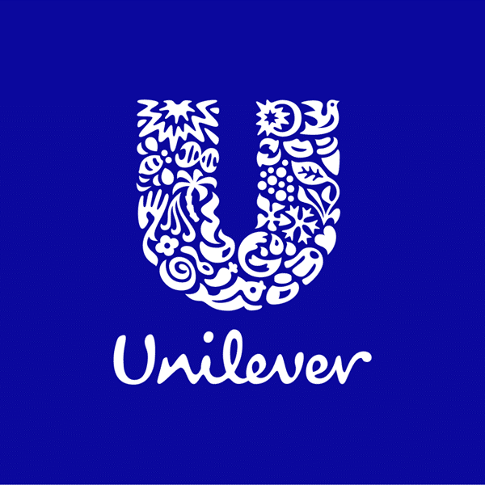

Experience
Professional
Unilever
Bangladesh
BizLearner — Project Coordinator
Role
1. Coordinated Netsuite (Portal) bug fixes, improving reporting efficiency for 50+ sales staff,
2. Monitored month-end sales data and resolved recurring issues, reducing delays by 20%,
3. Supervised sales reports and analysis to support strategic decision-making by top management
Aug 2024 – Mar 2025

Zatiq
Bangladesh
Marketing Strategy Development
Role
1. Designed and executed marketing campaigns reaching 5,000+ customers,
2. Conducted customer surveys, increasing brand awareness score by 15%,
3. Suggested UX improvements, leading to higher engagement on the company’s online portal.
Jun 2024 – Sep 2024
Club Experience
Voice
of Business
University of Dhaka
Deputy Editor - Editorial Wing
Role
1. Managed and maintained a terrific team of writers and guided them through the process
2. Managed the design content for bulletins and magazines,
3. Conceptualized the ideas to be featured in the regular and annual publication of the club,
Total tenure: 3 yrs 4 mos
Spartans'
CC
University of Dhaka
Management Associate
Role
During the one year tenure I managed to learn inciteful ideas regarding team management and event planning. I was lucky to organize the prestigious Sellsation 2022 during my stay at the club and this particular event single handedly pushed me to learn a bunch of new skills which was requirement of that time.
Tenure: 1 yr 1 mo